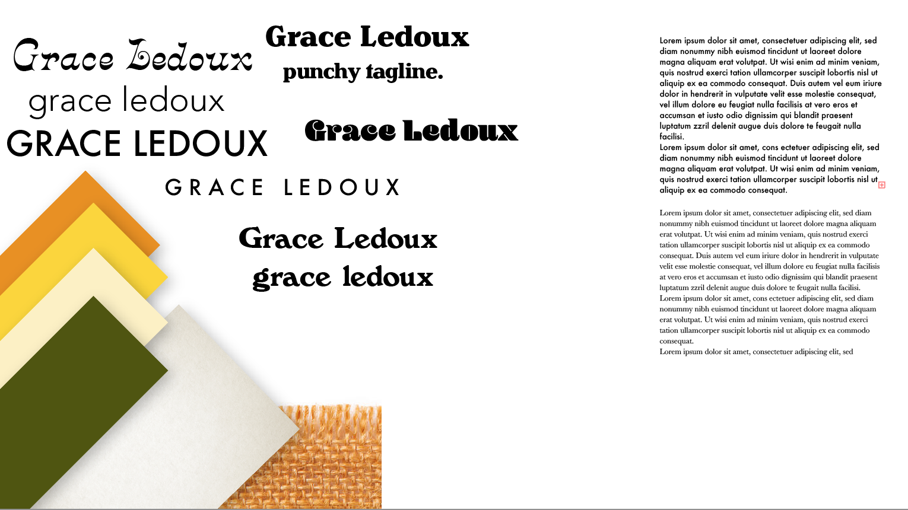
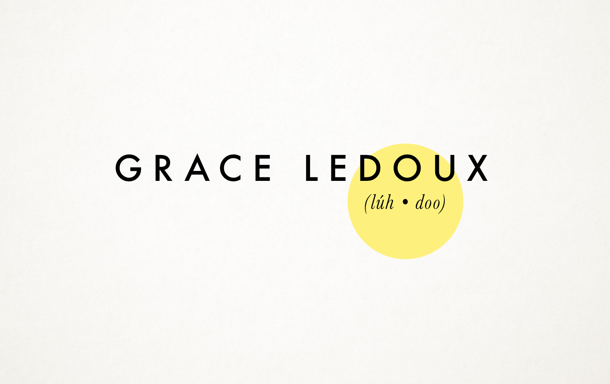
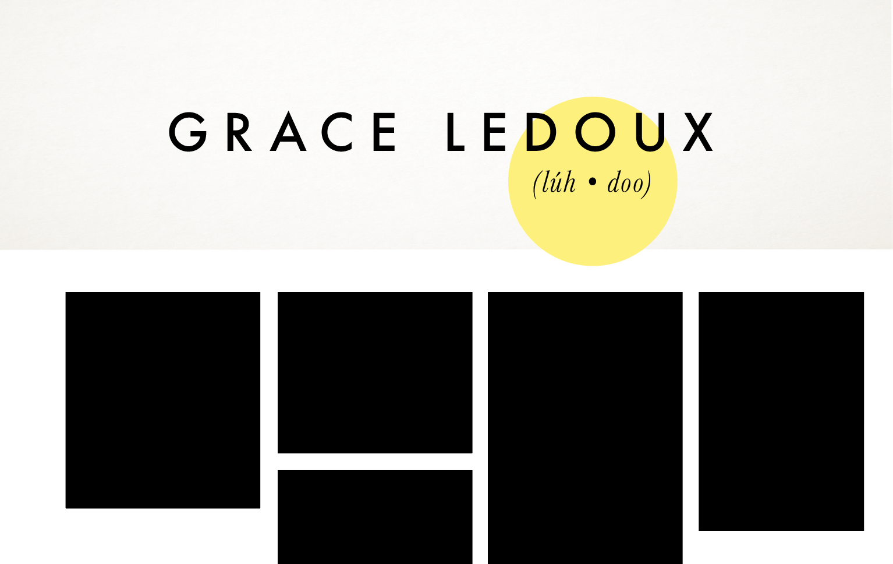

APRIL 2, 2018
Who am I?
I'll be using this space to track everything about the process ahead of me: building myself a nice portfolio site.
With my current coding skills, this seems pretty daunting, but it's such a neccessary thing to tackle at one time or other. I've already laid out all my goals and dreams for this project in my Project Proposal, and I've moved on to starting to curate a bit of a potential look and feel for the site.
This is tricky for a couple of reasons.
One, this is my site, so it needs to fit with my style. But at the same time (two), I'll be using this site as my portfolio to apply for internships and jobs in the future, so it needs to be accessible and attractive to those who don't neccessarily share my exact aesthetic. So, broadly appealing, but personal?
First, I need to backtrack and figure out what my "look" even is. Reviewing my projects from the past year or so, there are definitely a few recurring themes that I seem to gravitate towards:
- Circles
- Orange and yellow tones
- Plant and nature imagery
- Textures: papers, fabrics, moss, etc.
- Retro-inspired typography, especially drawing from the 60s and 70s
- Personal/illustrative feeling
Working with these things in mind, I've started to curate a little sketch area or moodboard for myself to see how these things play together and might make their way into this project.
Basically, I've laid out my common color palette, played around with a bunch of different typographic choices for a title, and on the right, tried out a couple different body typefaces. These are all based on my most common design choices throughout my past work.
Still thinking very roughly, I thought it made sense to start thinking of this site by means of the first page you'd see as soon as you arrive: this is probably the place where the color, composition, and typographic choices are going to be established, so I figured by starting with trying to design this page, it'll set the tone for the rest of the site.
My first sketch was all about being "on-brand" for myself and my aesthetic: so basically, orange, the typeface Blenny, and texure.

Honestly pretty dull and expected. Moving on.
My next sketch played with the idea that people are never really sure how to pronounce my last name (I don't even know if this is the correct phonetics, it's really just a placeholder for now). Still keeping in the idea that when you first land on this site, it'll just be a really clean, clear page with my name and maybe a punchy tagline about who I am as a designer.
The idea here would be to use a parallax scroll, so from that screen with just my name, you'd only have to scroll down to get this effect to happen (the black boxes are stand-ins for photos of my work). This still doesn't work (one of my goals is to have a gallery divided by project type), but it was an interesting idea.
I think this direction is too dry for now, design-wise, and even in doing this super quick sketches, I realized I'm working backwards. I should be thinking about the basic structure of my site (do you land on the gallery page, if the point is for it to be a portfolio?), not so much design choices yet. At least I realized it now!